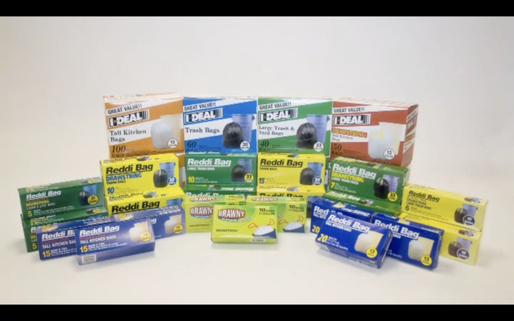
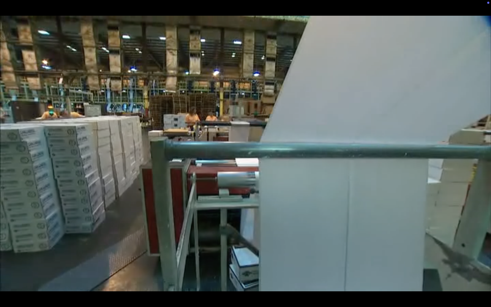
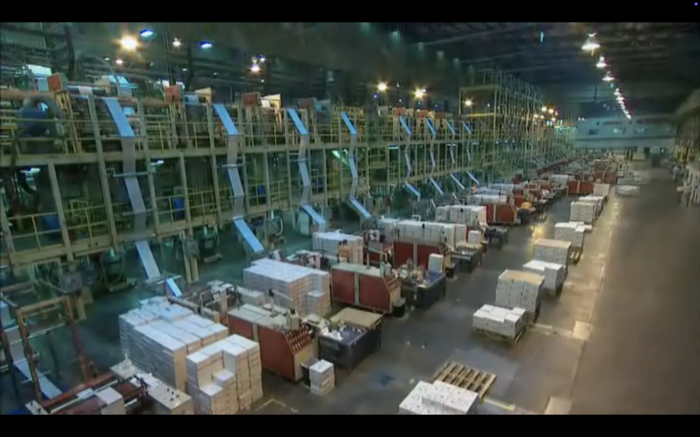
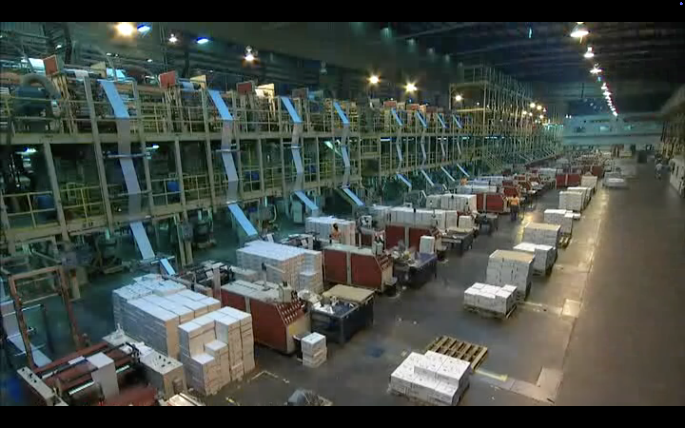

先進智慧化吹膜製程
自動原料空輸、加熱熔融、螺桿定量擠出與外風冷卻，使薄膜穩定結晶；同步電腦控制、扭力與張力控制，確保捲膜平整度。
定量擠出 · 穩定成型
FORMOSA PLASTICS GROUP × INTEPLAST GROUP
深耕嘉義新港，結合台塑企業工業生態系與美商 Inteplast Group 全球資源，以高度自動化的吹膜、製袋與印刷技術，為全球市場提供高強度、高品質、環境友善的塑料包材與捲膜解決方案。
探索臺灣營德OUR FOOTPRINT
臺灣營德新港廠座落於嘉義台塑企業新港廠區中。自 1989 年整地擴建、1991 年正式投產以來，始終致力於自動化製袋與高品質薄膜生產。
2014 年 11 月 1 日，正式轉換為臺灣營德股份有限公司（Inteplast Taiwan Corporation），直屬美商 Inteplast Group 體系，持續發揮跨國集團的技術優勢。
OUR CORE VALUES
從原料投入、吹膜、印刷到捲取，每個步驟皆以穩定品質、安全作業與可再利用的製程管理為原則。
自動原料空輸、加熱熔融、螺桿定量擠出與外風冷卻，使薄膜穩定結晶；同步電腦控制、扭力與張力控制，確保捲膜平整度。
定量擠出 · 穩定成型耳料薄膜、膜頭料等下腳品，均經廠內回收機再製為再生粒後投入製程；印刷使用水性印墨，提供單面雙色或雙面單色外觀。
100% 回收再利用新港廠嚴格執行台塑廠區安衛管理，貫徹「工作安全、災害歸零」的指導原則，讓穩定生產建立於安全的作業環境。
工作安全 · 災害歸零PRODUCT LINE
從家庭清潔、醫療包裝到零售與工業加工，提供具備高強度、穩定封口與平整度的產品選擇。

平坦式單張抽取、無心捲取點斷與拉繩款式；2023 年改良後的拉繩封口強度更佳，耐衝擊且不漏水。
美洲 · 日本 · 台灣
用於醫療院所點滴袋之外包裝，具高封口強度與耐衝擊性，可承受高溫高壓蒸汽滅菌製程。
台灣醫療機構
袋身耐衝擊、防漏水且封口強度佳，專供連鎖超市與食品零售包裝使用。
日本 · 歐美 · 台灣
具備優異薄膜強度與平整度，穩定供應下游與同業製袋加工，裁製各式高品質塑膠袋。
台灣 · 東南亞
AUTOMATED FILM EXTRUSIONAUTOMATION PROCESS
以數據化控制串連原料、吹膜、印刷與製袋，每個環節皆可追溯、可控管。
OUR PROMISE
臺灣營德將持續攜手台塑企業與美商 Inteplast Group，以自動化製程、嚴謹品質管理與資源循環利用，供應全球客戶值得信賴的包裝產品。